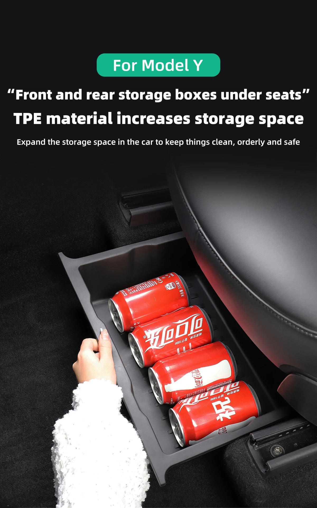
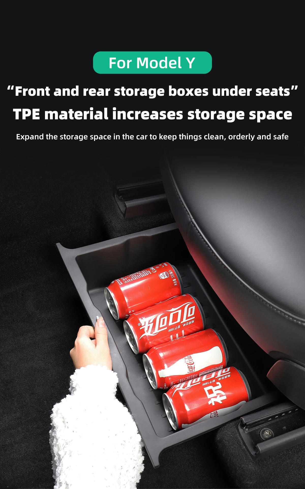
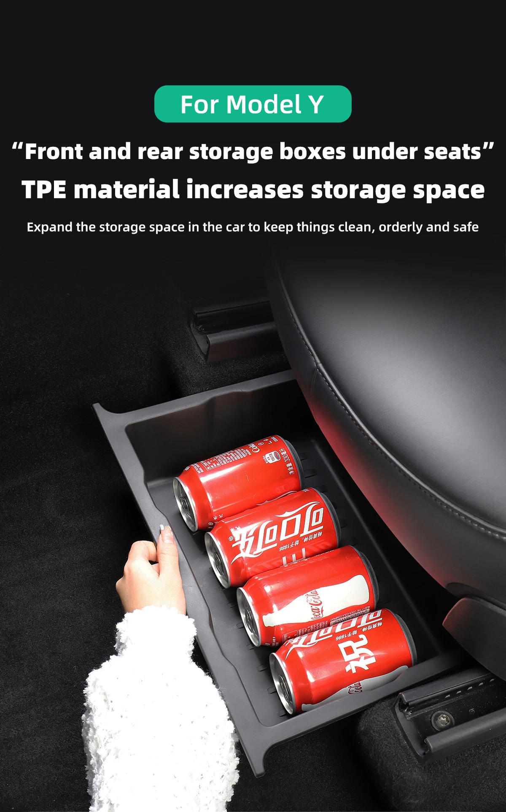

.webp)
.webp) 

Nuevo: Un artículo nuevo, sin usar, sin abrir, sin desperfectos y en el paquete original (en caso de venir empaquetado). El empaquetado debe ser el mismo que se encontraría en una tienda, a menos que el artículo haya sido empaquetado por el fabricante con material no destinado a su venta en tienda (por ejemplo una bolsa o caja sin etiquetas).
Consulta cualquier duda con nosotros o Para más información no dudes en contactarnos...
Tesla Model Y 2017-2023
Optimiza el espacio y la organización en tu Tesla Model Y con nuestra innovadora Caja de Almacenamiento Organizadora. Diseñada meticulosamente para adaptarse a los modelos Y desde 2017 hasta 2023, esta caja no solo ofrece durabilidad comprobada tras múltiples desmontajes, sino que también está fabricada con TPE resistente a la corrosión y al calor.
Imagina un espacio adicional diseñado para no comprometer tu seguridad, evitando que los objetos interfieran con los pedales y proporcionando una solución eficiente para mantener todo en orden. Además, su construcción robusta asegura una durabilidad excepcional, haciendo de esta caja el complemento perfecto para tu Tesla Model Y.
Descubre una forma elegante y funcional de mejorar la experiencia en tu vehículo.
¡Haz que cada viaje sea más organizado y eficiente con nuestra Caja de Almacenamiento para Tesla Model Y!
| Items | Descripción |
|---|---|
| [ Añade más espacio de almacenamiento ] | Este accesorio para el Tesla Model Y añade valioso espacio de almacenamiento, especialmente debajo de los asientos, ofreciendo la posibilidad de guardar diversos artículos pequeños. |
| [ Compatibilidad ] | Los accesorios más adecuados para el Tesla Model Y hasta ahora, aprovechan al máximo el espacio debajo del asiento para almacenamiento y organización, y se ajustan perfectamente a los modelos Y 2017, 2018, 2019, 2020, 2021, 2022 y 2023. |
| [ Caja de almacenamiento oculta ] | se ubicada bajo el asiento Tesla Model Y, se utiliza para almacenar artículos pequeños para uso diario, que incluyen: bebidas, tejidos, paraguas, herramientas, zapatos, e incluso puedes usarlo como bote de basura. Se pueden instalar hasta 4 compartimentos de almacenamiento, que pueden ser utilizados por pasajeros delanteros y traseros. ¡Y no afectará al ajuste del asiento! |
| [ Materiales de alta calidad ] | Fabricadas con material TPE de alta calidad y superficie flocada, garantizan durabilidad, reducen el ruido al conducir y protegen los objetos almacenados. |
| [ Fácil de usar ] | La instalación es fácil y sin complicaciones, permitiendo ocultarlas cuando no se necesitan y sacarlas fácilmente como cajones cuando sea necesario, convirtiéndolas en excelentes accesorios para mantener organizado el automóvil. |
| [ Excelentes accesorios Tesla ] | Después de usarlo, le gustará esta configuración, para que su automóvil ya no esté desordenado y pronto se organice. |

Se realizan envíos a España. Normalmente, el artículo se enviará en un plazo de 2 a 3 días laborables desde que se haga efectivo el pago.
Madrid, España
Usamos las politicas de devoluciones con las normativas de Ebay.